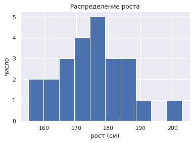

Чему равен средний рост руководителей страны
7.1. Чему равен средний рост руководителей страны¶
import pandas as pd
import numpy as np
data = pd.read_csv('https://raw.githubusercontent.com/dm-fedorov/pandas_basic/master/data/height.csv')
data.head()
| order | name | height(cm) | |
|---|---|---|---|
| 0 | 1 | Екатерина I Алексеевна | 155 |
| 1 | 2 | Екатерина II Алексеевна | 157 |
| 2 | 3 | Никита Хрущев | 160 |
| 3 | 4 | Дмитрий Медведев | 162 |
| 4 | 5 | Владимир Ленин | 165 |
data = data.rename(columns={"height(cm)":"height_cm"})
data.head(3)
| order | name | height_cm | |
|---|---|---|---|
| 0 | 1 | Екатерина I Алексеевна | 155 |
| 1 | 2 | Екатерина II Алексеевна | 157 |
| 2 | 3 | Никита Хрущев | 160 |
height_165 = data[data['height_cm'] > 165]
height_165.head(3)
| order | name | height_cm | |
|---|---|---|---|
| 5 | 6 | Павел I Петрович | 166 |
| 6 | 7 | Владимир Путин | 168 |
| 7 | 8 | Сталин | 170 |
data.query("height_cm > 165")
| order | name | height_cm | |
|---|---|---|---|
| 5 | 6 | Павел I Петрович | 166 |
| 6 | 7 | Владимир Путин | 168 |
| 7 | 8 | Сталин | 170 |
| 8 | 9 | Николай II Александрович | 170 |
| 9 | 10 | Пётр III Федорович | 170 |
| 10 | 11 | Леонид Брежнев | 173 |
| 11 | 12 | Анна Иоанновна | 175 |
| 12 | 13 | Юрий Андропов | 175 |
| 13 | 14 | Михаил Горбачев | 175 |
| 14 | 15 | Александр I Павлович | 178 |
| 15 | 16 | Константин Черненко | 178 |
| 16 | 17 | Елизавета Петровна | 179 |
| 17 | 18 | Иоанн VI Антонович | 180 |
| 18 | 19 | Петр II Алексеевич | 181 |
| 19 | 20 | Александр II Николаевич | 185 |
| 20 | 21 | Александр III Александрович | 186 |
| 21 | 22 | Борис Ельцин | 187 |
| 22 | 23 | Николай I Павлович | 189 |
| 23 | 24 | Петр I | 203 |
name_filter = 'Владимир Путин'
data.query("name == @name_filter")
| order | name | height_cm | |
|---|---|---|---|
| 6 | 7 | Владимир Путин | 168 |
data[data.name.str.contains("Екатерина")]
| order | name | height_cm | |
|---|---|---|---|
| 0 | 1 | Екатерина I Алексеевна | 155 |
| 1 | 2 | Екатерина II Алексеевна | 157 |
data.name.str.lower().str.contains("екатерина")
0 True
1 True
2 False
3 False
4 False
5 False
6 False
7 False
8 False
9 False
10 False
11 False
12 False
13 False
14 False
15 False
16 False
17 False
18 False
19 False
20 False
21 False
22 False
23 False
Name: name, dtype: bool
data['height(cm)'].values
---------------------------------------------------------------------------
KeyError Traceback (most recent call last)
File ~/opt/miniconda3/lib/python3.9/site-packages/pandas/core/indexes/base.py:3621, in Index.get_loc(self, key, method, tolerance)
3620 try:
-> 3621 return self._engine.get_loc(casted_key)
3622 except KeyError as err:
File ~/opt/miniconda3/lib/python3.9/site-packages/pandas/_libs/index.pyx:136, in pandas._libs.index.IndexEngine.get_loc()
File ~/opt/miniconda3/lib/python3.9/site-packages/pandas/_libs/index.pyx:163, in pandas._libs.index.IndexEngine.get_loc()
File pandas/_libs/hashtable_class_helper.pxi:5198, in pandas._libs.hashtable.PyObjectHashTable.get_item()
File pandas/_libs/hashtable_class_helper.pxi:5206, in pandas._libs.hashtable.PyObjectHashTable.get_item()
KeyError: 'height(cm)'
The above exception was the direct cause of the following exception:
KeyError Traceback (most recent call last)
Input In [10], in <cell line: 1>()
----> 1 data['height(cm)'].values
File ~/opt/miniconda3/lib/python3.9/site-packages/pandas/core/frame.py:3505, in DataFrame.__getitem__(self, key)
3503 if self.columns.nlevels > 1:
3504 return self._getitem_multilevel(key)
-> 3505 indexer = self.columns.get_loc(key)
3506 if is_integer(indexer):
3507 indexer = [indexer]
File ~/opt/miniconda3/lib/python3.9/site-packages/pandas/core/indexes/base.py:3623, in Index.get_loc(self, key, method, tolerance)
3621 return self._engine.get_loc(casted_key)
3622 except KeyError as err:
-> 3623 raise KeyError(key) from err
3624 except TypeError:
3625 # If we have a listlike key, _check_indexing_error will raise
3626 # InvalidIndexError. Otherwise we fall through and re-raise
3627 # the TypeError.
3628 self._check_indexing_error(key)
KeyError: 'height(cm)'
heights = data['height(cm)'].values # np.array(data['height(cm)'])
print(heights)
[155 157 160 162 165 166 168 170 170 170 173 175 175 175 178 178 179 180
181 185 186 187 189 203]
Теперь, получив такой массив данных, мы можем вычислить множество сводных статистических показателей:
print("Среднее: ", heights.mean())
print("Стандартное отклонение:", heights.std())
print("Минимальный: ", heights.min())
print("Максимальный: ", heights.max())
Среднее: 174.45833333333334
Стандартное отклонение: 10.916269076729263
Минимальный: 155
Максимальный: 203
print("25 процентиль: ", np.percentile(heights, 25))
print("Медиана: ", np.median(heights))
print("75 процентиль: ", np.percentile(heights, 75))
25 процентиль: 167.5
Медиана: 175.0
75 процентиль: 180.25
Иногда полезнее видеть графическое представление данных.
import matplotlib.pyplot as plt
import seaborn; seaborn.set() # set plot style
plt.hist(heights)
plt.title('Распределение роста')
plt.xlabel('рост (см)')
plt.ylabel('число');
